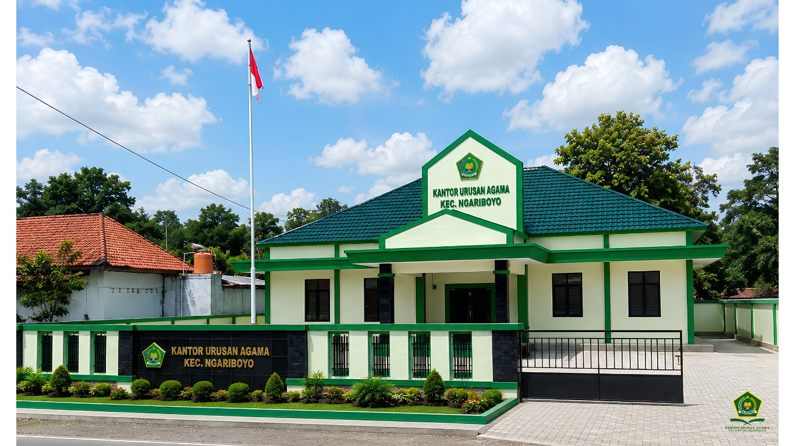

Informasi Pelayanan KUA
Gunakan halaman ini untuk pengumuman jadwal, perubahan layanan, dan informasi penting.

Daftar dan lengkapi kebutuhan administrasi pernikahan secara online.
Selengkapnya → 📅Lihat jadwal pernikahan yang telah terdaftar pada KUA Kecamatan Ngariboyo.
Selengkapnya → 📄Informasi dokumen dan persyaratan untuk setiap layanan di KUA.
Selengkapnya → ☎Alamat, nomor telepon, email, dan jam pelayanan KUA.
Selengkapnya →Silakan melakukan pendaftaran nikah melalui formulir online berikut.
Untuk melakukan pendaftaran nikah, silakan gunakan formulir resmi KUA Kecamatan Ngariboyo.
💍 DAFTAR NIKAH ONLINEFormulir akan terbuka di halaman baru. Silakan isi data dengan benar dan lengkap.
Jadwal nikah KUA Kecamatan Ngariboyo.
Daftar dokumen dan ketentuan administrasi yang perlu dipenuhi calon pengantin.
Petugas memeriksa kelengkapan data dan dokumen sebelum proses dilanjutkan.
Jadwal pelayanan disepakati setelah data dan persyaratan dinyatakan lengkap.
Informasi pendaftaran dan pencatatan pernikahan.
Layanan rekomendasi nikah untuk calon pengantin.
Informasi penerbitan, duplikat, dan legalisasi buku nikah.
Informasi dan konsultasi layanan wakaf.
Informasi layanan dan edukasi zakat.
Layanan konsultasi dan bimbingan keagamaan.
Gunakan halaman ini untuk pengumuman jadwal, perubahan layanan, dan informasi penting.
Materi edukasi dan bimbingan perkawinan dapat ditampilkan di sini.
Dokumentasikan kegiatan pelayanan dan program KUA secara berkala.
Ganti kotak di atas dengan foto kegiatan/gedung KUA pada Google Sites.